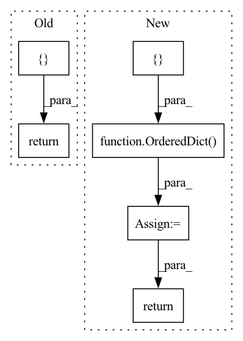

Pattern ID :3125
Before Change
return {
"input_ids": torch.randint(0, self.config["n_token"], (BATCH_SIZE, SEQ_LEN)),
"past_key_values": tuple([torch.zeros(self.config["past_key_values"], BATCH_SIZE, self.config["n_head"], SEQ_LEN, self.config["d_head"]) for _ in range(self.config["n_layer"])])
}
class MemTransformerLMOnnxModel(OnnxModel):
MemTransformerLM that enables addtiional ONNX optimizations.After Change
input_ids = torch.randint(0, self.config.n_token, (self.batch_size, self.seq_len))
past_key_values = tuple([torch.zeros(self.config.past_key_values, self.batch_size, self.config.n_head, self.seq_len, self.config.d_head) for _ in range(self.config.n_layer)])
common_mockups = OrderedDict({ "input_ids": input_ids, "past_key_values": past_key_values} )
return common_mockups
class MemTransformerLMOnnxModel(OnnxModel):In pattern: SUPERPATTERN
Frequency: 4
Non-data size: 6
Instances Fragment ID: 11971943
Project Name: microsoft/archai
Commit Name: a3a8fba1e1034fb7c5402560948d5c759fdc73bb
Time: 2022-12-16
Author: gth.rosa@uol.com.br
File Name: archai/nlp/models/mem_transformer/onnx_mem_transformer.py
M Class Name: MemTransformerLMOnnxConfig
N Class Name: MemTransformerLMOnnxConfig
M Method Name: mockups(1)
N Method Name: mockups(1)
M Parent Class: OnnxConfig
N Parent Class: OnnxConfig
M File Name: archai/nlp/models/mem_transformer/onnx_mem_transformer.py
N File Name: archai/nlp/models/mem_transformer/onnx_mem_transformer.py
M Start Line: 60
M End Line: 63
N Start Line: 48
N End Line: 53
Before Change
return {
"input_ids": torch.randint(0, self.config["n_token"], (BATCH_SIZE, SEQ_LEN)),
}
@property
def inputs(self) -> OrderedDict:
Defines the inputs and their shapes to be used when exporting to ONNX.After Change
@property
def mockups(self) -> Mapping[str, torch.Tensor]:
input_ids = torch.randint(0, self.config.n_token, (self.batch_size, self.seq_len))
common_mockups = OrderedDict({ "input_ids": input_ids} )
return common_mockups
@property
def inputs(self) -> Mapping[str, Mapping[int, str]]: Fragment ID: 11971975
Project Name: microsoft/archai
Commit Name: 5865865a1b4ecc482048f5ec8de9fa33a4c9247d
Time: 2022-12-16
Author: gth.rosa@uol.com.br
File Name: archai/nlp/models/config_base.py
M Class Name: OnnxConfig
N Class Name: OnnxConfig
M Method Name: mockups(1)
N Method Name: mockups(1)
M Parent Class:
N Parent Class:
M File Name: archai/nlp/models/config_base.py
N File Name: archai/nlp/models/config_base.py
M Start Line: 71
M End Line: 73
N Start Line: 97
N End Line: 100
Before Change
// df.columns = ["t"] + ["input_{}".format(num) for num in list(range(len(lags.columns)))] + \
// ["target_{}".format(num) for num in list(range(len(targets.columns)))]
// return df
inputs = [ lagsreturn inputs, input_names, targets
def check_dataframe(df):After Change
// time = np.expand_dims(time, axis=1)
// data is stored in OrderedDict
inputs = OrderedDict({ "time": time} )
if n_lags > 0:
lags = np.array([series[i: i + n_lags] for i in range(n_samples)])
inputs["lags"] = lags
// if n_changepoints > 0:
// inputs["n_changepoints"] = breakpoint_passed
// raise NotImplementedError
targets = None
if n_forecasts > 0:
targets = [series[i + n_lags: i + n_lags + n_forecasts] for i in range(n_samples)]
targets = np.array(targets)
// else:
// targets = [[None] * n_samples]
// targets = np.array(targets)
if verbose:
for key, value in inputs.items():
print(key, "shape: ", value.shape)
return inputs, targets
def check_dataframe(df): Fragment ID: 11971956
Project Name: ourownstory/neural_prophet
Commit Name: 384f1803a758d07de17db9631d9941c4d7a65de3
Time: 2020-05-19
Author: oskar.triebe@merantix.com
File Name: code/make_dataset.py
M Class Name: AnonimousClass
N Class Name: AnonimousClass
M Method Name: tabularize_univariate_datetime(4)
N Method Name: tabularize_univariate_datetime(5)
M Parent Class:
N Parent Class:
M File Name: code/make_dataset.py
N File Name: code/make_dataset.py
M Start Line: 125
M End Line: 176
N Start Line: 152
N End Line: 184
Before Change
for each state dicts at this position.
max_depth = 0
sorted_state_dicts = [ []return sorted_state_dicts
def get_state_dict_with_prefix(prefix: str, After Change
for override_key, override_state_dict in override_name2state_dict.items():
depth = len(override_key.split(".")) - 1
if depth not in depth2override_state_dicts:
depth2override_state_dicts[depth] = [ override_state_dict = OrderedDict( sorted(depth2override_state_dicts.items()))
return depth2override_state_dicts
def get_state_dict_with_prefix(prefix: str, Fragment ID: 11971973
Project Name: eora-ai/torchok
Commit Name: 961bcf5658d68296a207353f876289a489c7a62c
Time: 2022-07-04
Author: rashit.bayazitov.1995@gmail.com
File Name: src/constructor/load.py
M Class Name: AnonimousClass
N Class Name: AnonimousClass
M Method Name: sort_state_dict_by_depth(1)
N Method Name: sort_state_dict_by_depth(1)
M Parent Class:
N Parent Class:
M File Name: src/constructor/load.py
N File Name: src/constructor/load.py
M Start Line: 37
M End Line: 46
N Start Line: 38
N End Line: 47